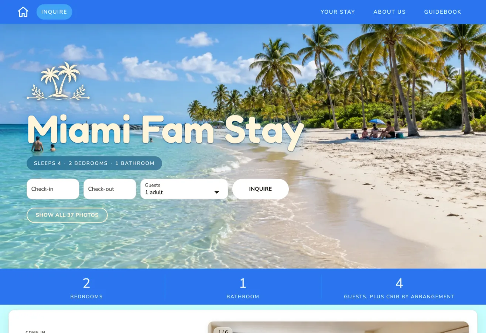
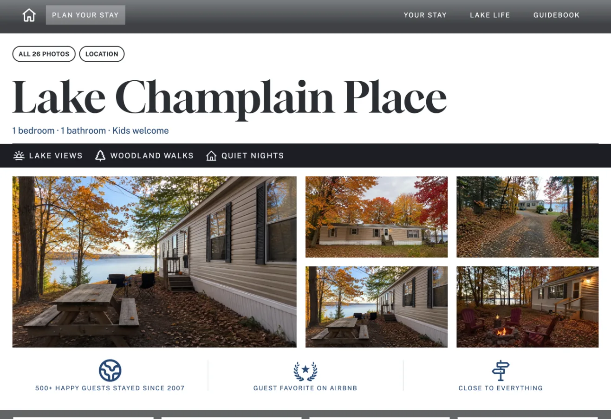
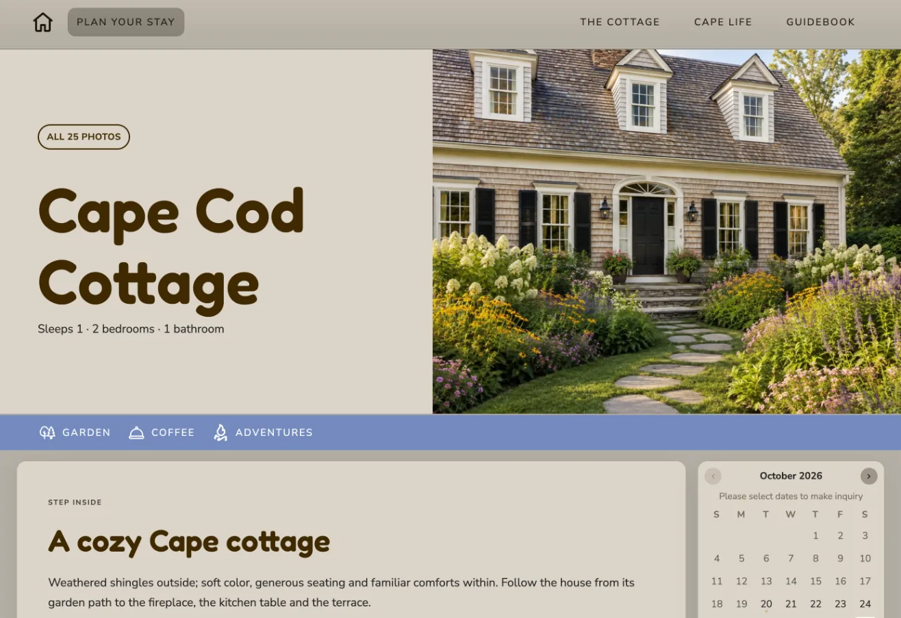
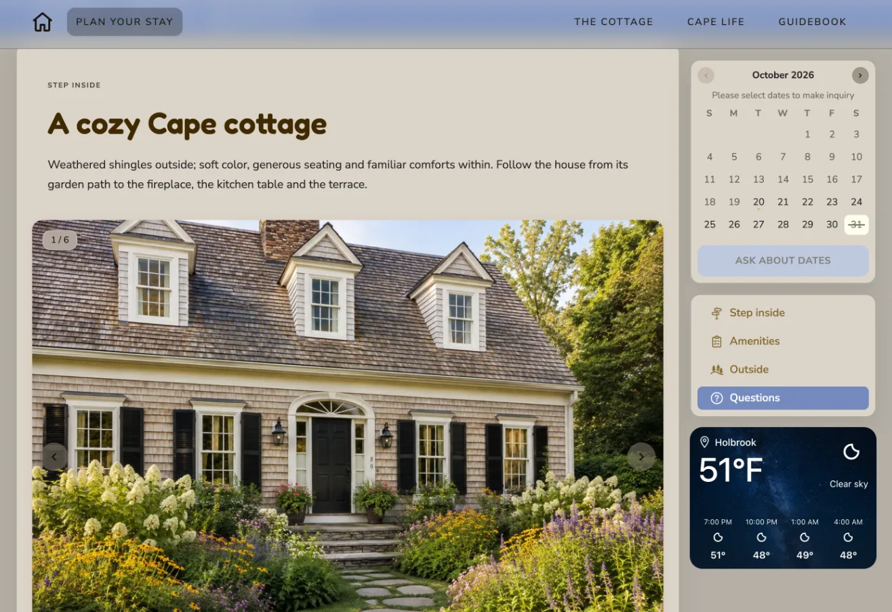
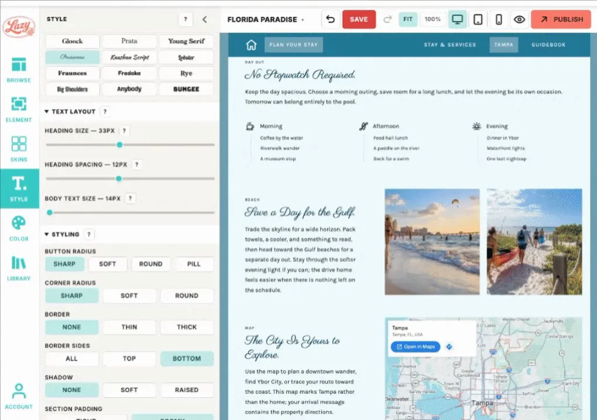
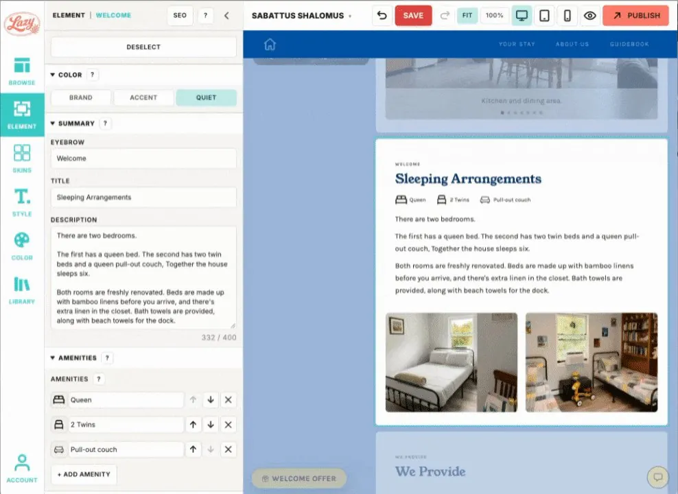
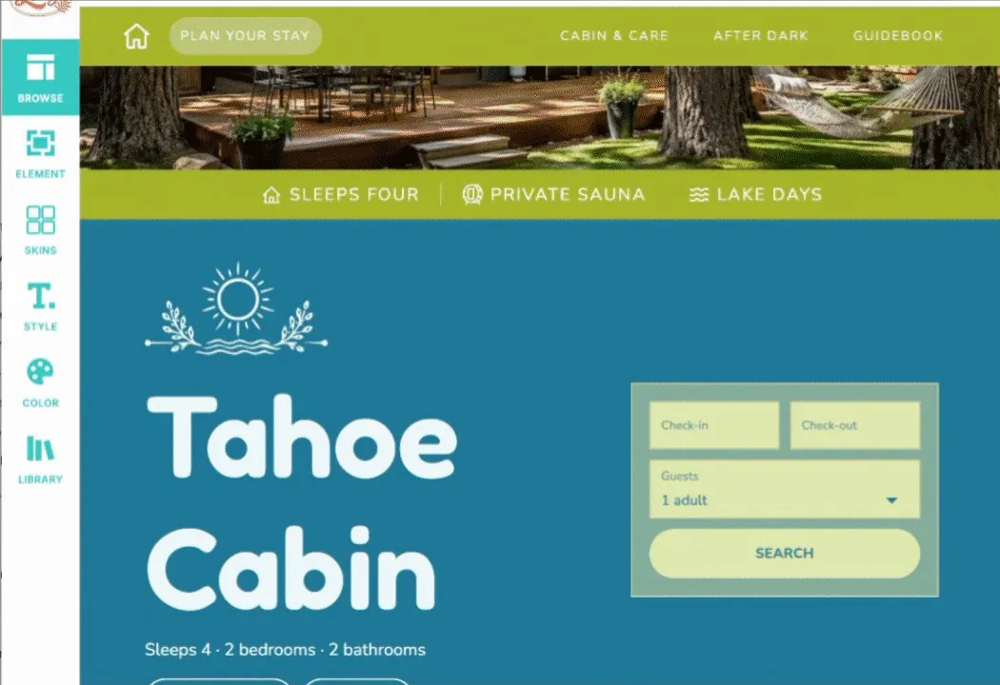

Lazy, websites for hosts
- Role
- Founder, Service and UX Designer
- Scope
- Research, offer, design system, editor and onboarding
- Highlights
- 6 live websites · 15 demo designs · Built with Claude Code and Codex
What exactly I did
Maine, California, Connecticut, BC, Vietnam
Portfolio on lazy.vacations
Switch in one click, content stays
$50 a month after the first month
Situation
Hosts rent on Airbnb’s terms
Independent hosts get most of their bookings through Airbnb and pay for it in fees, in rules they don’t control, and in looking like every other listing. Guests will book direct, but only with a host they trust.
Situation
Hosts rent on Airbnb’s terms
Independent hosts get most of their bookings through Airbnb and pay for it in fees, in rules they don’t control, and in looking like every other listing. Guests will book direct, but only with a host they trust.
What hosts and guests told the surveys
Hosts don’t struggle to build a website. They struggle to fill it: in Lodgify’s 2024 survey, “driving direct bookings” was the top challenge for nearly 57% of hosts. Guests are open to booking direct, but only if they trust the host. In Touch Stay’s survey of 1,204 guests, 69% would book direct readily, 26% would if they trusted the host, and only 5% were committed to a platform.
Fees add pressure. Airbnb made its 15.5% host-only fee mandatory for listings connected to a property management system in October 2025, with independent hosts scheduled to follow in the fall of 2026. Most of these numbers come from companies that sell direct-booking tools, so I read them as direction, not proof, and ranked them against neutral research from Phocuswright and Skift.
What stops hosts from going direct
I ranked the fears from the research and gave each one an answer in the product or the offer. Design was on the list, but as a way to earn trust, not for its own sake.
| Fear | How Lazy answers it |
|---|---|
| “Guests won’t trust a site that isn’t Airbnb” | Imported Airbnb reviews, a finished design, a guidebook guests can read before booking |
| “I’ll handle payments and chargebacks” | Lazy never takes payments. The host’s booking platform or Airbnb takes them, into the host’s own account |
| “Nobody will find it” | Keep Airbnb for discovery. Search setup, pages AI agents can read, and a free listing on Pleasant Street |
| “Too much tech” | Lazy builds it, hosts it and keeps it running. The host edits in an editor they can’t break |
| “I’ll lose AirCover” | Lazy doesn’t sell insurance and says so. Some booking platforms offer per-stay insurance, like Guesty |
| “Not worth it for one house” | Free to build, first month free, then $50 a month. Cancel anytime |
Built by a host
I host a lake house in Sabattus, Maine. Sabattus Shalomus was the first Lazy website and the reference build for everything after it.
Task
A finished website the host can’t break
Build each host a website that feels like their place, connect the booking tools they already use, and hand them an editor that changes everything except the design rules.
Task
A finished website the host can’t break
Build each host a website that feels like their place, connect the booking tools they already use, and hand them an editor that changes everything except the design rules.
Who it’s for
Owner-operators with one or a few homes, who take hosting personally and don’t want to look like every other listing. They keep Airbnb for discovery and want a place guests can come back to. Lazy is a website, not a property management system: it works next to the tools the host already pays for.
| Job | Lazy | The host’s booking platform |
|---|---|---|
| The website | Designs it, hosts it, keeps it running | — |
| Booking button | Puts it on the site and sends guests where the host chooses | Shows its booking box and calendar on the site |
| Calendar and rates | — | Keeps them, and keeps dates in step with Airbnb |
| The booking and payment | — | Takes them, into the host’s own account |
| Inquiries | Sends guests’ requests to the host | — |
Three ways to book
Every host gets a booking button, whatever they use. The editor picks one of three modes. If a mode is missing what it needs, the site falls back to Inquiry, so the button never breaks.
| Mode | What the guest does | What the host needs |
|---|---|---|
| Booking | Books on the site, in the booking platform’s widget | Lodgify, Hospitable, Guesty, OwnerRez or another platform with a website widget |
| Platform | Opens the host’s listing and books there | A listing on Airbnb, Vrbo or Booking.com |
| Inquiry | Picks dates and sends a request | Nothing. Always available. A request, not a booking |
Action
One engine, many houses
A design system for houses, an editor drawn on the real site, guest tools that answer questions, a written procedure for every new site, and an offer that answers hosts’ fears.
Action
One engine, many houses
A design system for houses, an editor drawn on the real site, guest tools that answer questions, a written procedure for every new site, and an offer that answers hosts’ fears.
A design system for houses
Every Lazy site is built from the same parts, so a new house costs content, not code. The first screen has seven arrangements; I pick the one that shows a home best, and the host can switch in one click without losing photos or text. Long pages get the Rail, a side menu with the date box that stays in sight, or the Jump strip across the top.




A theme is colors. A skin is design plus colors. A skin never carries property content, so one click restyles the whole site and the host’s words and photos stay put. The color editor pairs every fill with its ink, so a background and its text are always chosen together.


An editor you can’t break
Hosts edit their site like a blog post, not like Wix. The editor draws the real site, not a mock-up, at real phone, tablet and desktop widths. On the left: the words, the look, the colors and the photos. Along the top: undo, save, preview and publish. Hosts can change anything inside the design rules and nothing that breaks them. An empty field stays empty: the site never fills a gap with made-up reviews or names.


Guest tools that cut the messages
The guidebook fills itself with restaurants, coffee shops and groceries near the house, on a map; the host removes what they don’t recommend and adds favorites. Reviews come over from Airbnb, Vrbo, Booking.com or Google, and the host pins, edits or hides them. A review request waits, hidden, until the host approves it.
The AI assistant is trained on the host’s own material: the website, house rules, the welcome letter. It answers day and night, about the place, the rules and the area. It doesn’t take bookings.




Making a website, the same way every time
A host sends a listing link. An intake brief turns it into five choices: property type, setting, property style, website style and focus, for example a rustic lake house in the countryside with an editorial site about family stays. A written procedure takes it from there, and it has two modes. On a real house nothing is invented: no capacity, amenities, policies or reviews that the host didn’t supply. Demo sites may invent details that fit their photos.
| Step | Rule |
|---|---|
| Sources | Listing, host answers, photos, reviews. Conflicting facts are left out until confirmed |
| Location | Approximate only. The street address never appears on the site |
| Page plan | At least four different section types per page; “What this place offers” within the first two sections of Home |
| Photos | Uploaded to the site’s own library; every image on the page has a record |
| Guidebook | Protected: never regenerated or overwritten during a fill |
| Check | Every page at phone, tablet and desktop, in the editor and as a guest |
| Handoff | A demo and training session, then the host edits on their own |
Build and test
I designed the product and built the front end: the design components, the editor and the site pages. A backend developer runs the servers: each published site becomes a static bundle served on its own address, so a busy editor never slows a guest down. I built with Claude Code and Codex, and wrote the rules down first, so every session works the same way: the owner’s words are the scope; name the existing part that does the job before writing anything new; never let one property read another’s colors or content.
| Check | What it proves |
|---|---|
| Module generator | Generated components match their sources |
| Design tokens | Every color and size the site uses is declared |
| Responsive sections | Sections behave at every width |
| Visual check | No overflow, clipping, broken headings or missing images |
| Editor journeys | Named tasks in the editor still work end to end |
| Live check | The deployed site answers and its files load |
An offer a one-house host can say yes to
The build is free. The business is hosting and support, the part a host can’t do alone. The offer page answers the questions hosts ask before they sign up, from “who designs my website?” to “what happens if I cancel?”.
| Item | Terms |
|---|---|
| Design and setup | Free, built from the host’s listing and photos |
| Hosting and support | First month free, then $50 a month; $25 for each additional property |
| To start | A listing on Airbnb, Vrbo or Booking.com. No credit card |
| Web address | A free lazy.vacations address, or the host’s own domain |
| Leaving | Take a hosting-ready static site, or leave it with Lazy as a portfolio piece |
| Guest data and money | Never stored by Lazy; bookings and payments stay with the host’s platform |
Result
Live, and growing
Open websiteSix real homes on Lazy, fifteen demo designs, and a free map of independent homes that grew out of the research.
Result
Live, and growing
Six real homes on Lazy, fifteen demo designs, and a free map of independent homes that grew out of the research.
What shipped
Lazy launched publicly on October 12, 2026. Six real homes now run on Lazy, from a family lake house in Maine to a garden house in Da Lat, Vietnam, next to fifteen demo designs that show what the same engine can do.


What came next
The research’s biggest gap was traffic: a website alone doesn’t bring guests. Lazy’s answer is Pleasant Street, a free map of independent vacation homes where every direct-booking website is welcome, whoever built it. The engine is also ready for other small businesses: sections are modules and the vacation rental set is one manifest. A second set isn’t live yet.
Lessons learned
What this project taught me
Four rules I now start every project with.
Lessons learned
What this project taught me
Four rules I now start every project with.
Hosts didn’t need a prettier website; they needed guests to trust it. That’s why reviews, the guidebook and a booking button come with every site.
The build is the part hosts don’t want to pay for. The service is the part they can’t do themselves.
A guest who books a third bedroom that isn’t there is a refund and a bad review. Missing facts stay missing until the host confirms them.
Building with AI agents works when the rules are written down. The same short rules kept every session consistent.